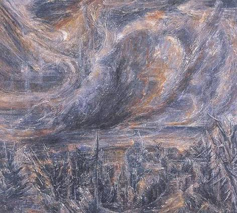

Poems
The Aspirations of C. B. Andie

Nothing I cared, in the lamb white days, that time would take me Up to the swallow thronged loft by the shadow of my hand, In the moon that is always rising, Nor that riding to sleep I should hear him fly with the high fields And wake to the farm forever fled from the childless land. Oh as I was young and easy in the mercy of his means, Time held me green and dying Though I sang in my chains like the sea. — Dylan Thomas
Tonight, beneath this raspy sky With merlot streaks and Jäger hues, I’ve stumbled with my hand enclosed About a bottle of chartreuse; The blacks and blues, they composed Between my ears these views, This ornamental atmosphere That urges me to jump—release—and fly. To fly, I say, I sigh: To fly! The inkling vapor spreads me soft Until I am alight, aloft. I am dewy on this grass, Wet and wasted, Reeking of the ceremonial spirit— Alas! I’ve tasted Colors that Monet impressed upon me, But when I look up now, I see These colors full—and free! This holy threaded night sky shawl Is something more alive, Something I could not contrive, Not with all the words my God has given (No—with these, I have been sinning!) So I say that I aspire To dissolve, to be expanse, To wear the shoes of darkness dance And tap—TAP—tap away Into that tapestry—what majesty!— It shall be me. The inkling vapor spreads me soft Until I am alight, aloft. There is a harmony, I hear Small creatures in the night, Crickets, bullfrogs, and wind blown grass That trumpets like an echo Of the days long gone, long passed. But if I could be a melody! I’d die right here if I could live My next life as the night time chirp That rises, desires to usurp The quaintness of the gentle night— Bejewelled and bellowing in the breeze, Oh, what a sight! That murmurous melody, Thrumming, strumming, And dreams of a cognac. Bastions of the sky! Drops of whiskey! Whisk me away, where the stars burn, And I shall be known by a former name. Stardust, they say I am stardust, But I have a raving heart within this dusty form, With fires fueled by a cosmic gust, It’s a whistling sound—I must— This is my aspiration, See those specks up there in the charring sky? Flecks of mica, or universes, Marvels of the wondrous Maker? I will burn myself and this world, Imprinting on that galactic acre, I shall have planets at elbow and foot And be king of wine glass wisdoms! Raggedy, puny body; Damn this animated disgrace, I stumble because I know, in this race, There is no running quick enough. Look, even those clouds run expeditiously— They drift, regal as the placid shadow That hastens on after its master. There is a waning, silver glow Enshrined upon those timid faces, With this breeze, now moving faster, And I insist, I shall move with it; Watch, in slow and soft decay, From flesh and bone and blood I vaporise and drift away; To scan the world and all its vermin Smiting them in my great downpour What’s it for, what’s it for? Oh, don’t you see! What else could you want to be? Dirt—it is cold tonight, What a blotchy, mulchy sight, These mounds beneath my legs and neck Comprised of the organic speck, It speaks to me (And speaks of being free) Which is alluring, And in my whirring, brandy brain Within is stirring Some mythological notion That this earthen ocean is my destiny. It will be me, when time has struck the gavel, When I have met my greatest aspiration, To be this planet’s firmament, Live eternity and witness all the world, Yes—this must be what God meant When He said that the meek shall inherit the earth; I submit to this umber crumble, And no longer shall I stumble Since my birth. Curaçao and molasses rum, It fuels a fervent, darkened drum. God, am I dumb— I am composed of slop and stink, I have arrived on the edge, on the brink, And in a swirling stasis fermenting; Now I lie on the grass. My blood is cheap beer, I admit, My heart is a dainty box wine, But my lungs are the savior I need For in this night time stupor, When my body and soul are both sore, The machine of the wind is abuzz Sucking in all of the air that I need to survive. It is not even I that I contrive! Indeed, I give my drunken thanks To that autonomous contraption. And still I wonder— Those wispy breaths that I do breathe, Oh what a life to have, to live! I say, to be those zephyrs giving life Must be, of all things—truly— The most noble amidst this sea Of molecules that make the air; I’d be that esoteric share That learned the wisdoms of the living, Then released and pushed away To live another day, yes, To live another day. It is an inky, pitch black night And I have so much more to say, With my bottle of chartreuse As I sway, a shade away, a shade of swaying, praying grey. Oh, don’t you see! What else could you want to be?
C.W. Pilarski is a poet pursuing an MFA in Creative Writing at the University of Alaska Fairbanks. He completed his undergraduate education in English Literature at Cornell University, where he won the 1st place prize for the 2025 undergraduate George Harmon Coxe Poetry Award. His website is www.cwalkerpoetry.com.